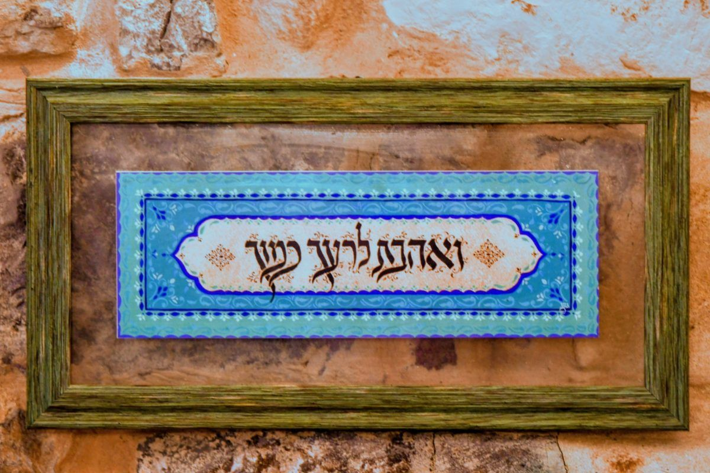

שיר שנולד רק בשבילך
תן/י לי את שמך, שם המשפחה ותאריך לידתך. אחזיר לך שיר שנוגע בנשמה מקרוב. אישי לגמרי. יחיד בעולם.
הזמינו את השיר
מחפש/ת מתנה שתיגע באמת?
יש מתנות שפותחים ושוכחים. ויש מתנה שנכנסת ללב — ונשארת שם.
כולנו מכירים את הרגע הזה. מתקרב אירוע חשוב, ורוצים לתת מתנה בלתי נשכחת. לא עוד מוצר מהמדף. לא עוד פרח שיתייבש. לא עוד כרטיס ברכה סטנדרטי. אתם מחפשים משהו שייגע באדם שאתם אוהבים בדיוק שם, עמוק בפנים.
מתנות גנריות
כולם נותנים ושוכחים תוך שבוע
אירועים גדולים
חתונה או בר מצווה שמצריכים מגע אמיתי
מילים שלא יוצאות
הרצון לומר משהו עמוק לאדם קרוב, בלי לדעת איך
החיפוש האמיתי
משהו שיאמר: ראיתי אותך, הכרתי אותך, נגעתי בך
מרגע שהשיר מגיע אליכם
זה לא סתם שיר. זאת מראה. כזו שמשקפת בדיוק מי אנחנו, מאיפה אנחנו באים, ולאן אנחנו הולכים. שורות שנכתבו רק בשבילך, שנוגעות במה שאף אחד לא ידע לגעת בו לפניהן.
לא נכתב על ידי מכונה. לא הועתק מתבנית.
לפעמים כיף לגעת במשהו שאף אחד לא נגע לפניך.
שולחים פרטים
שם, שם משפחה ותאריך לידה. זה כל מה שצריך.
השיר מתוקשר
אני מתקשר לנשמה שלך ויוצר שיר שנוגע מקרוב לאמת שלך.
מקבלים שיר
שיר אישי, חדש ויחיד בעולם. משהו שנוצר רק בשבילכם.
יוצר שירים מתוקשרים
אני יוצר שירים אישיים שמגיעים ממקום עמוק ומתוקשר. כל שיר נולד מחיבור אמיתי לאנרגיה ולנשמה של האדם שבשבילו הוא נכתב.
השיר שתקבל/י הוא לא תוצר של תבנית. הוא נוגע בך מקרוב, נכתב רק בשבילך, ומביא איתו משהו שאת/ה אולי לא ידעת שאת/ה מחפש/ת עד שקראת אותו.
השיר יכול להיות מתנה לחתונה, לבר מצווה, לאדם אהוב, או פשוט מתנה לעצמך. כי לפעמים אנחנו זקוקים למישהו שיראה אותנו במדויק ויגיד את זה בשורות שנשמרות לאורך שנים.
שיר שנולד מהתקשרות. אישי. חדש. ייחודי לגמרי.
לכל רגע שחשוב לכם
שירים שנוצרו לאנשים אמיתיים
כל שיר נכתב במיוחד עבור אדם אחד בלבד
שיר אחד. רגע שלא נשכח.
פשוט. ישיר. עמוק.
- שולחים שם, שם משפחה ותאריך לידה (אפשר להוסיף אירוע, שפה, וכמה מילים על עצמך או האדם שעבורו השיר)
- שיר שנכתב מתוקשרות לנשמה שלך
- אישי לגמרי. לא חוזר על עצמו. לא דומה לשום שיר אחר
- מתאים למתנה לחתונה, בר מצווה, יום הולדת, או לעצמך
- משהו שנוגע מקרוב לנשמה. שמישהו יזכור לכל החיים
כשהשיר נוגע בנשמה
כשמישהו קורא שיר שנכתב בדיוק בשבילו
יש רגעים שנחרטים. הרגע שבו מישהו קורא שורות שמרגישות כמו שהוא בדיוק. כאילו מישהו ראה אותו לגמרי.
שיר כזה לא נשכח. הוא נשמר בלב, עולה שוב בחתונה, נקרא שוב בימים קשים. הוא מזכיר למישהו שהוא לא לבד.

בכל שפה שתרצו
ובכל שפה אחרת שתבקשו
כי כל נשמה ראויה לשמוע את הסיפור שלה בשפה שמרגישה לה בית.
בשביל להיות כנים
- את/ה מחפש/ת מתנה גנרית שאפשר לקנות בכל חנות
- לא מעניין אותך מגע אמיתי ועומק
- את/ה מעדיף/ה מחיר על פני ערך אמיתי
- את/ה רוצה לתת מתנה שתיזכר לנצח
- את/ה מחפש/ת נגיעה עמוקה ואמיתית בנשמה
- את/ה רוצה משהו יחיד בעולם, שנוצר רק בשבילך
- את/ה מרגיש/ה שזה מגיע לך או לאדם אהוב
מחלקים אור ביחד
כל ההכנסות מיועדות לתרומה לילדים מיוחדים. מתנה אחת הופכת לשתי מתנות: אחת לאדם שאתם אוהבים, ואחת לילד שהאור הזה יכול להגיע גם אליו.
אנחנו לא רק קונים מתנה. אנחנו מחלקים אור.
שלח/י לי את שמך. תקבל/י שיר.
שם, שם משפחה ותאריך לידה. זה כל מה שצריך. תקבלו שיר שנוגע בנשמה מקרוב. אישי. חדש. ייחודי.
רוצים להוסיף פרטים? ספרו לנו על האירוע, השפה, או כמה מילים על האדם — הכל עוזר ליצור שיר מדויק יותר.
יש לך שאלות? שלח/י לי הודעה בווטסאפהזמינו את השיר
רק 99 ש"ח לשיר שנשאר לכל החיים